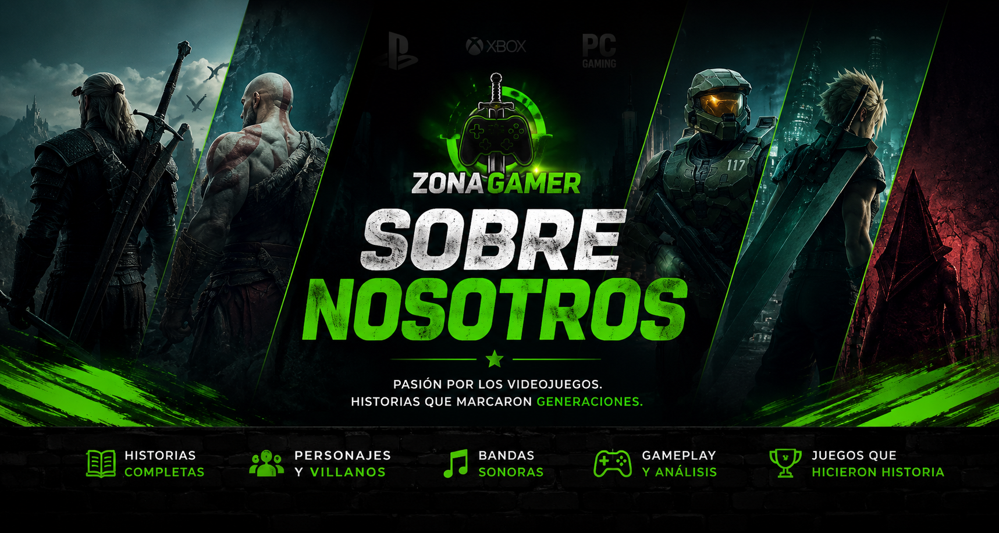

Un sitio creado para jugadores que quieren conocer la historia completa detrás de cada videojuego.
Zona Gamer es una página dedicada al mundo de los videojuegos, creada para compartir información completa sobre títulos clásicos y modernos de distintas generaciones.
Nuestro objetivo es ofrecer contenido detallado y entretenido, incluyendo historias completas, personajes, villanos, bandas sonoras, gameplay, curiosidades y análisis generales.
Queremos que cada juego tenga una página única donde los jugadores puedan descubrir todo sobre sus sagas favoritas.
Explicaciones detalladas sobre la trama de videojuegos icónicos.
Información sobre héroes, enemigos, organizaciones y lore.
Mecánicas, estilos de combate, duración y experiencias jugables.
OSTs legendarias que marcaron generaciones enteras.
Juegos de PS1, PS2, PS3, PS4, Xbox, PC y más.
Curiosidades, rankings, recomendaciones y mucho más.
Zona Gamer busca convertirse en una gran biblioteca gaming, donde cada saga tenga contenido organizado y visualmente atractivo.
La idea es crear una experiencia inmersiva para fans de franquicias como Resident Evil, Silent Hill, Metal Gear, Devil May Cry y muchos otros títulos legendarios.
Seguiremos expandiendo el sitio con nuevos juegos, mejor diseño y más contenido en el futuro.